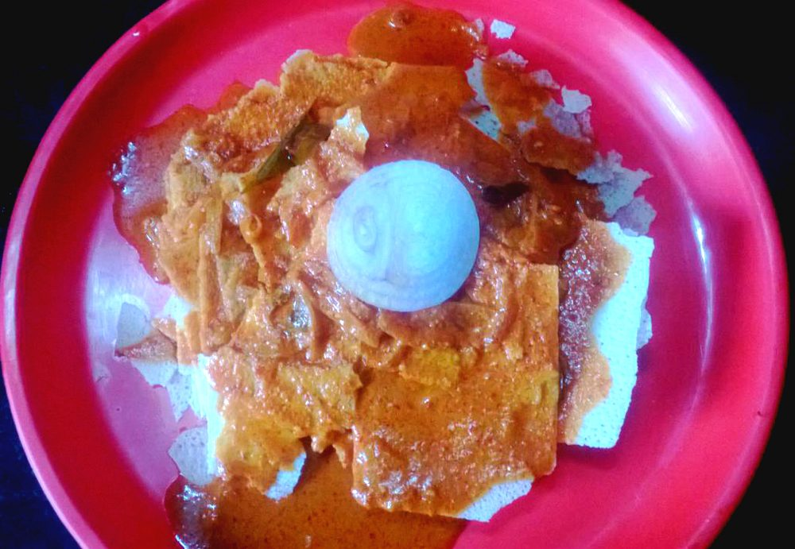

Allergens: none of the ten listed below
Checked against the ingredient list for ten allergens: milk, egg, fish, crustaceans, tree nuts, peanuts, sesame, mustard, soy and gluten. Brands vary, so read the label on anything new to you.
Ingredients
Quantities for 4.
- 800g bone-in, cut into curry pieces Chicken
- 300g wafers Rice Flourkori rotti wafers are sold ready-made; almost every home buys them
- 1 cup, freshly grated Coconutfrozen grated coconut, thawed, works
- 10 dried, stems snapped off Kashmiri Chillibyadgi if you can get it. Same deep red, gentle heat
- 3 hot ones Dried Red Chillithis is where the actual heat comes fromoptional
- 2 tbsp Coriander Powder
- 1 tsp Cumin Seeds
- 1/4 tsp Fenugreek Seedsany more and the gravy turns bitter
- 1 tsp Black Pepper
- 1/2 tsp Turmeric
- 8 cloves Garlic
- 1 inch piece Ginger
- 2 medium, one sliced and one finely chopped Onion
- lime-sized ball Tamarind
- 4 tbsp Coconut Oil
- 2 sprigs Curry Leaves
- 1/2 cup, thick Coconut Milkloosens and rounds the gravy at the endoptional
- 2 1/2 cups Water
- to taste Salt
Cookware
stovetop, kadhai, blender
Before you start
- Soak the tamarind in 1/2 cup warm water for 20 minutes, then squeeze it out and strain.
- Wipe the chicken dry and salt it lightly 30 minutes ahead so the masala has something to grip.
- Keep the rotti wafers sealed until the curry is actually on the table. They lose their crackle in humid air.
Method
- Roast the kashmiri and hot chillies in 1 tsp of the coconut oil over low heat until they darken a shade and smell toasty, about 2 minutes.Pull them out the second they smell nutty. Scorched chilli makes the whole pot bitter and there is no fixing it.
- In the same pan roast the coriander powder, cumin, fenugreek and pepper for 1 minute until fragrant, then tip everything onto a plate to cool.
- Fry the sliced onion, garlic and ginger in 1 tbsp coconut oil until the onion is soft and edged with brown, about 8 minutes.
- Grind the cooled spices, the fried onion mixture and the grated coconut with 1/2 cup water to a very smooth, deep red paste.Grind in two rounds with a minute's rest between them. A gritty masala never smooths out later in the pot.
- Heat the remaining coconut oil in a kadhai, crackle the curry leaves and cook the chopped onion until translucent, about 4 minutes.
- Add the chicken and turmeric and turn it over high heat for 5 minutes, until the pieces stiffen and the surface goes opaque.
- Stir in the ground masala and fry it down for 8 minutes, until it darkens and oil beads at the edge of the pan.This is the step people cut short. Underfried ground coconut tastes chalky right through the finished curry.
- Pour in 2 cups water and the tamarind extract, salt it, and simmer uncovered for 20 minutes until the chicken is tender and the gravy just coats a spoon.
- Stir in the thick coconut milk, warm it through for 1 minute and take the pan off the heat.Do not let it boil after the coconut milk goes in or it will split into oil and grain.
- Break the rotti wafers into wide bowls and ladle the hot curry over them at the table.Pour only once everyone is seated. The wafers go from crisp to soaked in about a minute.
Safe temperatures: Chicken and duck are done at 74°C / 165°F, taken at the thickest part and clear of the bone. Reheat leftovers to 74°C / 165°F. FoodSafety.gov
Storage
The curry keeps 3 days refrigerated and tastes better on day two; reheat gently and never at a rolling boil. Store the rotti wafers separately in an airtight tin at room temperature or they will go limp.
Nutrition Medium estimate
High protein: 50 g a serving, 25% of the calories
| Per serving405 g | Per 100 g | |
|---|---|---|
| Calories | 809 kcal | 200 kcal |
| Protein | 50.3 g | 12 g |
| Carbohydrate | 74.2 g | 18 g |
| of which sugars | 3.8 g | 1 g |
| Fibre | 6.3 g | 2 g |
| Fat | 34.3 g | 8 g |
| of which saturated | 24.5 g | 6 g |
| of which unsaturated | 6.4 g | 2 g |
Ingredients given to taste count as zero, so the real figures run a little higher. Nearest database match used for curry leaves. Estimated from raw ingredients using USDA FoodData Central.
Times, yields, allergens and nutrition are guidance. Use your own judgement on doneness and on storing. More in About.